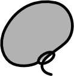

+
レイヤー追加

描画ツール
消しゴムツール
3
ペンサイズ
背景色
AI設定
ファイル管理
保存 (⌘S)
NEW
SAVE (.json)
LOAD
範囲をドラッグして選択
縦横比
自由
1:1
4:5
16:9
9:16
倍率
1x
2x
3x
背景透過
全体を保存
確定
コピー
やり直し
閉じる
?
名称
DESU™ draw
支給元
warpshoot.github.io/desu
製造
wpy
説明書
人間向け
メッセージ
次回以降表示しない
キャンセル
OK
許容範囲
32
隙間閉じ
0
● LIVE
Options
AI監視モード (試験中)
API Provider
Anthropic
Google
OpenAI
Model
API Key
送信間隔 (秒)
読み上げ
記憶保持数 (メッセージ数)
これまでの会話を忘れる
表示名
キャラ設定
リセット
閉じる